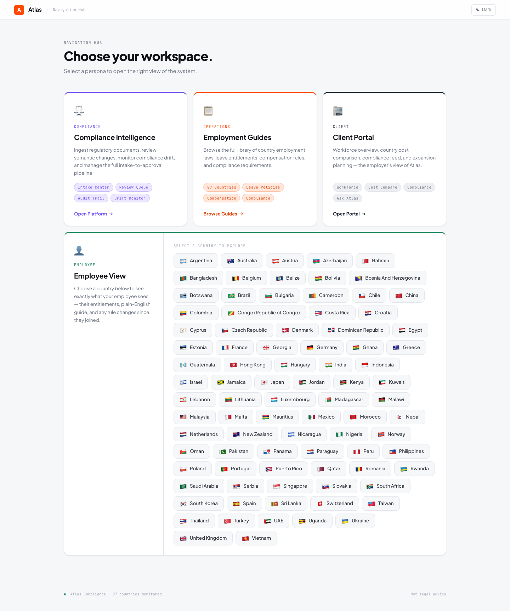

Country Guide Reconciliation Platform¶
An AI-powered compliance governance platform that continuously monitors official government sources, detects regulatory changes to employment guides, and routes them through a human-in-the-loop approval workflow with full provenance tracking.

Business Problem¶
Global employers operating across jurisdictions must comply with local employment laws — leave entitlements, minimum wage, tax obligations, termination notice periods, work permit requirements, and more. These rules change frequently, are published across dozens of government websites, and carry material legal and financial risk when stale.
The cost of getting it wrong:
- Payroll miscalculations triggering regulatory penalties
- Incorrect leave entitlements leading to employment disputes
- Stale immigration guidance causing visa processing failures
- Compliance audit failures due to inability to prove when a rule was adopted and who approved it
Traditional approaches — manual monitoring of government websites by compliance analysts — are slow, error-prone, and unscalable. A single missed regulatory gazette update can expose the organization to millions in liability.
What This Platform Does¶
| Stage | Description |
|---|---|
| Monitor | Crawls official government sources for 87 countries on a configurable schedule |
| Extract | Uses Groq LLaMA 3.3 70B to extract structured employment rules from raw HTML |
| Reconcile | Semantic diffing engine classifies changes by type and materiality |
| Review | Human reviewers examine before/after diffs with source evidence |
| Publish | Approved changes are versioned, provenance-tracked, and published to client-facing guides |
| Detect Drift | Continuous monitoring for staleness, unreviewed escalations, and compliance gaps |
| Alert | Region-aware Slack notifications to compliance owners |
Key Capabilities¶
- Semantic change classification — Not just text diffs; the engine distinguishes numeric threshold changes, eligibility scope modifications, new requirements, timeline shifts, and non-material formatting
- Materiality assessment — Every change is scored Critical / High / Moderate / Low / Informational so reviewers prioritize what matters
- Full provenance chain — From government source URL to crawler snapshot to LLM extraction to reviewer decision to published rule, every link is recorded
- Temporal rule queries — "What was India's minimum wage on March 15, 2025?" answered from immutable version history
- Drift detection — Automated alerts when rules go stale, reviews sit unactioned, or coverage gaps emerge
- Audit-ready operations — Immutable audit log with reviewer identity, timestamp, rationale, and source evidence for every decision
Global Coverage — 87 Countries¶
Employment guides are maintained across 87 countries spanning APAC, EMEA, and the Americas. Each country covers up to 7 rule categories: Leave, Working Hours, Compensation, Benefits & Social Security, Employment Terms, Immigration, and Workplace Safety.
Full country list (click to expand)
| Region | Countries |
|---|---|
| APAC (18) | Australia, Bangladesh, China, Hong Kong, India, Indonesia, Japan, Malaysia, Nepal, New Zealand, Pakistan, Philippines, Singapore, South Korea, Sri Lanka, Taiwan, Thailand, Vietnam |
| EMEA (53) | Austria, Azerbaijan, Bahrain, Belgium, Bosnia And Herzegovina, Botswana, Bulgaria, Cameroon, Congo (Republic of Congo), Croatia, Cyprus, Czech Republic, Denmark, Egypt, Estonia, France, Georgia, Germany, Ghana, Greece, Hungary, Israel, Jordan, Kenya, Kuwait, Lebanon, Lithuania, Luxembourg, Madagascar, Malawi, Malta, Mauritius, Morocco, Netherlands, Nigeria, Norway, Oman, Poland, Portugal, Qatar, Romania, Rwanda, Saudi Arabia, Serbia, Slovakia, South Africa, Spain, Switzerland, Turkey, UAE, Uganda, Ukraine, United Kingdom |
| Americas (16) | Argentina, Belize, Bolivia, Brazil, Chile, Colombia, Costa Rica, Dominican Republic, Guatemala, Jamaica, Mexico, Nicaragua, Panama, Paraguay, Peru, Puerto Rico |
Tech Stack¶
| Component | Technology | Rationale |
|---|---|---|
| Application Framework | Flask (Python) | Lightweight, rapid iteration, strong ecosystem |
| Database | SQLite / PostgreSQL (dual-backend) | Zero-ops local dev; Postgres for production scale |
| LLM Provider | Groq API (LLaMA 3.3 70B) | Fast inference, structured extraction, generous rate limits |
| Semantic Engine | Regex + string similarity | Deterministic, auditable classification without LLM dependency |
| Alerting | Slack Webhooks | Real-time, region-routed notifications |
| Scheduler | APScheduler | In-process cron with misfire recovery |
| Documentation | MkDocs Material | Auto-captured screenshots, GitHub Pages hosting |
| Screenshot Automation | Playwright | Headless Chromium for CI-integrated visual documentation |
Quick Start¶
pip install -r requirements.txt
python app.py # Initialize DB + start server on :8080
python notion_import.py # One-time baseline seed from Notion
Then open http://localhost:8080/ops for the compliance dashboard.
Documentation Structure¶
| Section | Audience | Content |
|---|---|---|
| Platform Architecture | Solution Architects, Engineering | System design, data flow, service graph |
| Core Modules | Engineering, Compliance Leadership | Deep-dive into each pipeline stage |
| Operations Guide | Compliance Analysts, Ops Teams | How to use the dashboard, review changes, manage drift |
| API Reference | Engineering, Integrations | Endpoint catalog with request/response schemas |
| Development | Engineering | Setup, testing, deployment, screenshot automation |